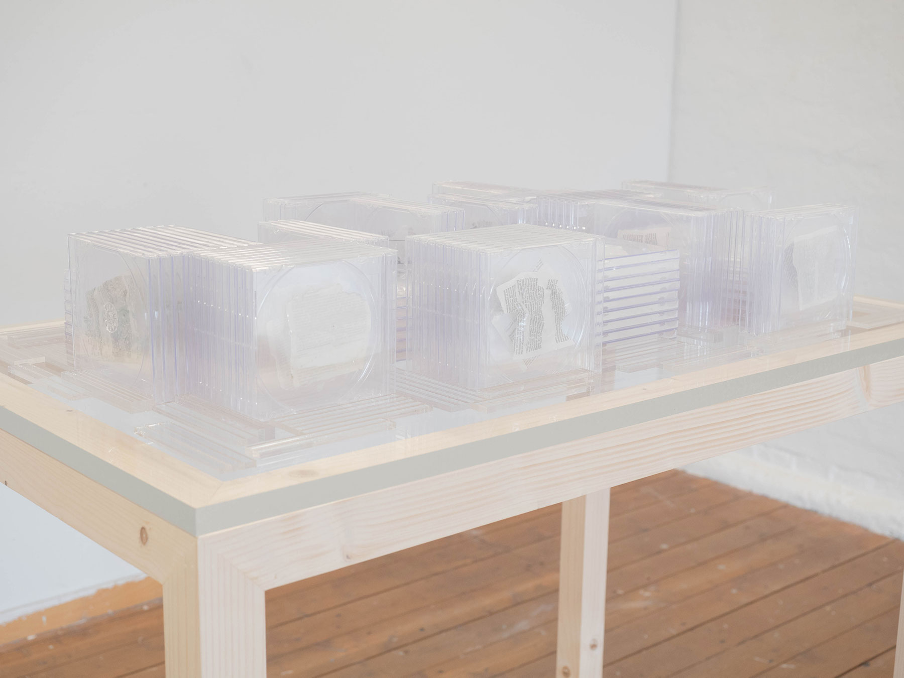
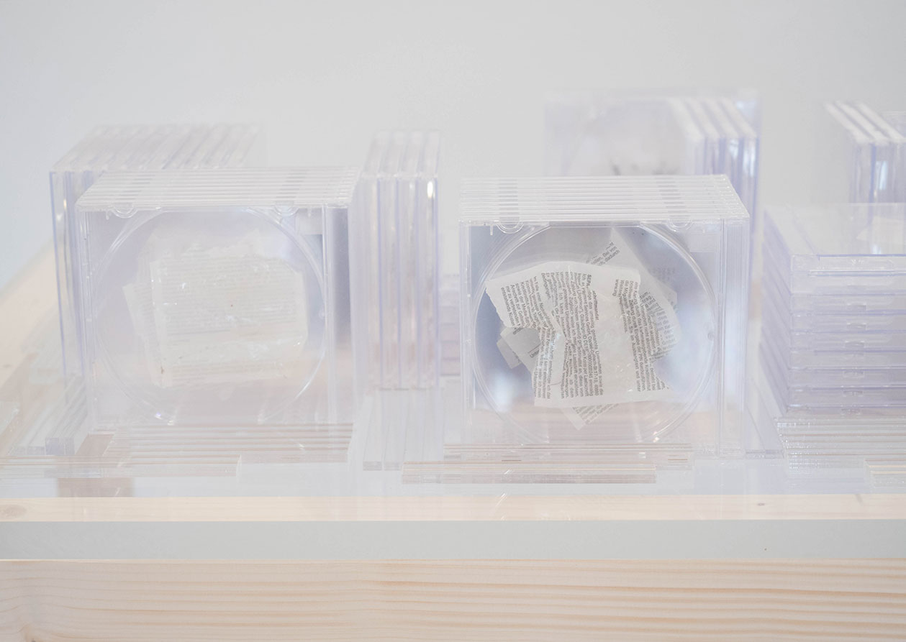
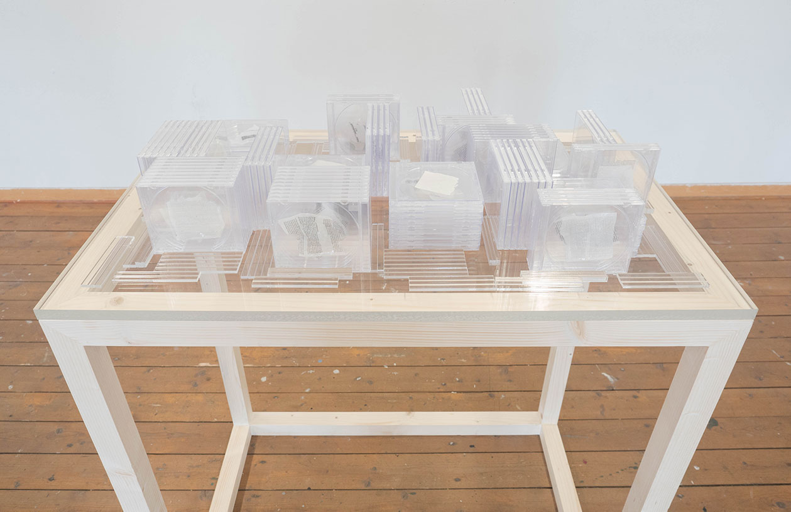

(in) - form
2020
Installation
h120 × w100 × d60 cm
(in)-form is an installation that archives my personally used fragmentary papers such as receipts, flyers, and invoices. These papers are torn and crystallized with resin, then preserved in jewel cases, each considered a repository of a unique "information" that I have created. Rather than the redundant three-dimensional form of paper documents, which can be seen as noise, this artwork focuses solely on the textured surface of the paper, treating it as the "information" to be "read" in contrast to the industrial flatness.

